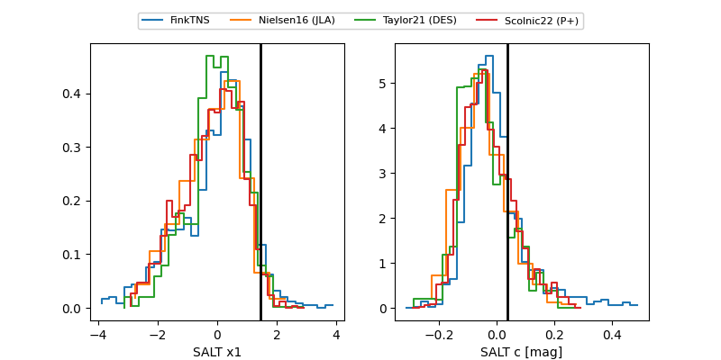

FINK: ZTF25abnqqtq
Lasair: ZTF25abnqqtq
ALeRCE: ZTF25abnqqtq
TNS: 2025wtk
YSE: 2025wtk
ZTF25abnqqtq (ztf,fink)
2025wtk (tns,yse)
ATLAS25lhs (atlas)
equatorial (ra, dec) = (11.1492,-3.63410)
galactic (l, b) = (118.6568,-66.44904)

last atlasc=18.88, atlaso=19.07, ztfg=19.29, ztfr=19.07
1 atlasc, 2 atlaso, 7 ztfg, 6 ztfr detections